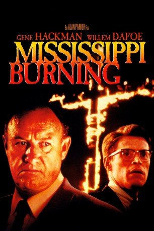

#1105 Mississippi Burning - Die Wurzel des Hasses
Alternativ: Mississippi Burning
Auszeichnungen: 1 Oscars gewonnen für 6 Oscars nominiert 3 BAFTA-Awards gewonnen
 
 IMDB-Wertung: 7.8 / 10
IMDB-Wertung: 7.8 / 10  Metascore: 65
Metascore: 65 
Im südlichen US-Bundesstaat Mississippi werden 1964 drei junge Männer, ein schwarzer und zwei weiße Bürgerrechtler von einem Wagen mit Blaulicht in einer abgelegenen Straße angehalten. Nachdem sich die drei wüste, rassistische Beschimpfungen anhören müssen, werden sie erschossen. Zur Aufklärung des Falls werden der idealistische Nordstaatler Alan Ward (Willem Dafoe) und der erfahrene ehemalige Südstaaten-Sheriff Rupert Anderson (Gene Hackman) als FBI-Ermittler nach Jessup County geschickt. Dort haben die FBI-Agenten keine leichte Aufgabe vor sich, sind die offen rassistischen Einwohner doch wenig hilfreich bei der Aufklärung des Verbrechens. Als den Agenten klar wird, dass die drei ermodert wurden, fordert Ward einen großen Trupp FBI-Agenten und sogar das Militär an, um zu helfen. Unterdessen kommt Anderson der Frau des Hilfssheriff, Mrs. Pell (Frances McDormand), näher.
Jahr: 1988
Dauer: 128 Minuten
FSK: 16
Land: USA Studio: Orion PicturesTonspuren:
Untertitel: Englisch,
Auflösung: 1080p (1920x1040) Größe: 13824 MB
Genre: Krimi, Drama, Geschichte, Mystery, Thriller
Regisseur:  Alan Parker
Alan Parker
Drehbuch: Chris Gerolmo
Soundtrack: Trevor Jones
Darsteller:
 Gene Hackman als Agent Rupert Anderson
Gene Hackman als Agent Rupert Anderson Willem Dafoe als Agent Alan Ward
Willem Dafoe als Agent Alan Ward Frances McDormand als Mrs. Pell
Frances McDormand als Mrs. Pell Brad Dourif als Deputy Clinton Pell
Brad Dourif als Deputy Clinton Pell R. Lee Ermey als Mayor Tilman
R. Lee Ermey als Mayor Tilman Gailard Sartain als Sheriff Ray Stuckey
Gailard Sartain als Sheriff Ray Stuckey Stephen Tobolowsky als Clayton Townley
Stephen Tobolowsky als Clayton Townley Michael Rooker als Frank Bailey
Michael Rooker als Frank Bailey Pruitt Taylor Vince als Lester Cowens
Pruitt Taylor Vince als Lester Cowens Kevin Dunn als Agent Bird
Kevin Dunn als Agent Bird Frankie Faison als Eulogist
Frankie Faison als Eulogist- Geoffrey Nauffts als Goatee
 Stephen Bridgewater als Wesley Cooke
Stephen Bridgewater als Wesley Cooke- Park Overall als Connie
- Darius McCrary als Aaron Williams
- Tonea Stewart als Mrs. Walker
 Mark Jeffrey Miller als Fire Bomber
Mark Jeffrey Miller als Fire Bomber John P. Fertitta als T.V. Commentator #2
John P. Fertitta als T.V. Commentator #2- Doug Jackson als Reporter #4
 Tobin Bell als Agent Stokes
Tobin Bell als Agent Stokes- Rick Washburn als Agent Brodsky
- Henry W. Laster als Street walker , uncredited
 Badja Djola als Agent Monk
Badja Djola als Agent Monk- Thomas B. Mason als Judge
- Rick Zieff als Passenger
- Christopher White als Black Passenger
- Gladys Greer als Hattie
- Jake Gipson als Mose
- Dianne Lancaster als Waitress
- Stanley W. Collins als Hollis
- Daniel Winford als Fennis
- Marc Clement als Floyd Swilley
- Larry Shuler als Earl Cooke
- Bob Penny als Curtis Foy
- James F. Moore als Barber
- Georgia F. Wise als Beauty Parlor Woman 1
- Lois Allen als Beauty Parlor Woman 2
- Barry Davis Jim Sr. als Choctaw Man
- Dan Desmond als Television Commentator
- Lou Walker als Vertis Williams
- Billie Jean Young als Mrs. Williams
- Alisa R. Patrick als Church Soloist
- Barbara Gibson als Church Soloist
- Pat Funderburk als Pell Maid
- Dawn Boyd als Interviewee
- Dwight Boyd als Interviewee
- Linda Fuller als Interviewee
- George Isbell als Interviewee
- Ethel L. Mayes als Interviewee
- James Arnold Mayes als Interviewee
Datei: X:\1988\Mississippi Burning - Die Wurzel des Hasses (1988, FSK16, 1920x1040).mkv seit 20.05.2015
Festplatte: HD 1987-1991
 Es gibt insgesamt 66 Filme in der Gruppe '1988'
Es gibt insgesamt 66 Filme in der Gruppe '1988'